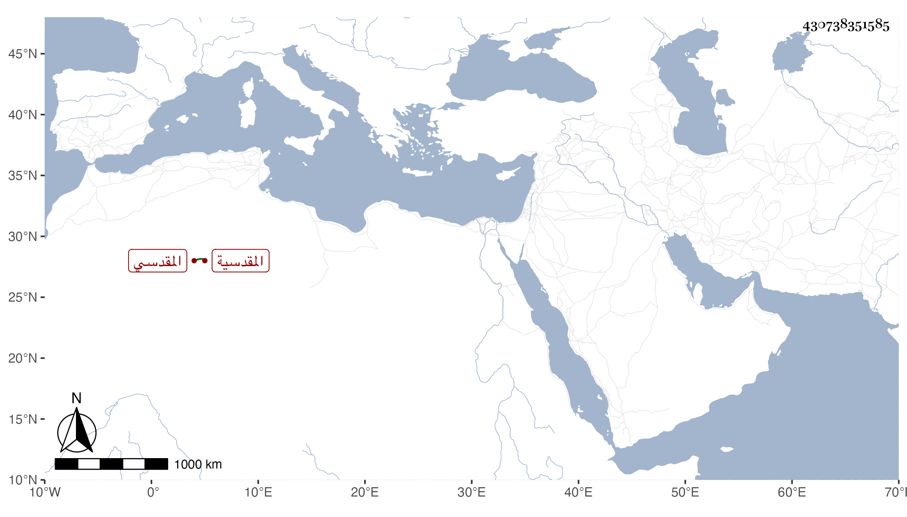

0902Sakhawi.DawLamic.ITO20230111-ara1.EIS1600.430738351585
Biography ID: 430738351585
568
فاطمة ابنة الحاج بدر الدين سليمان بن أبي بكر المقدسية زوج البرهان إبراهيم بن الحافظ أبي محمود المقدسي . أجاز لها ابن الخباز والقلانسي وآخرون وحدثت سمع منها ابن موسى والأبى في سنة خمس عشرة ، وذكرها شيخنا في معجمه فقال أجازت في الاستدعاء الذي فيه ابنتي رابعة .
